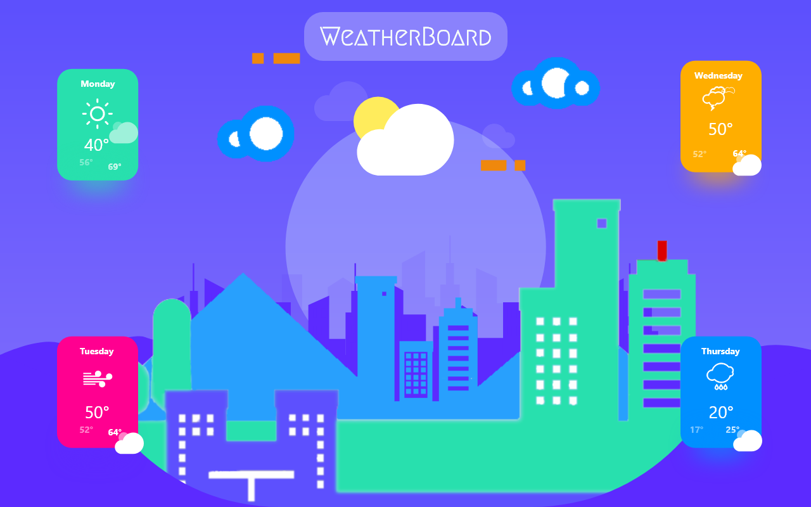
**Requirements:** - Android Studio 3.5 or better. - JDK 8 or better. - Android SDK 29. - Supports API Level +17. - Material Components 1.1.0 or better. **Features** - It will appear multiple boards based on weather condition. - It has Dual Mode Theme: Day Mode & Night Mode. - It has Dual Mode Languages Support: English & Bangla. - Environmental Situation will be seen via the animated icon. - It will Forecast Upcoming 4 Days with 3 Hours Interval. - It will Predict next 15 Days Weather forecast. - It will forecast your Local places Humidity. - It will forecast your Local places Environmental Condition. - It will forecast your Local places Temperature. **Additional:** - You can change the location if you want to. **Note:** - Used [OpenWeatherMap] API. - Use Material Design 2. - Use locale Database. - This Application is only for Educational Purposes. There is no intention to violent the Terms and Condition of Google Play. - If one wants to use this Application for there Educational project, they can use the repository from this Git. --- **Demo** application is available in [Play Store] **Release** repository is available in [Release] --- ### Screenshots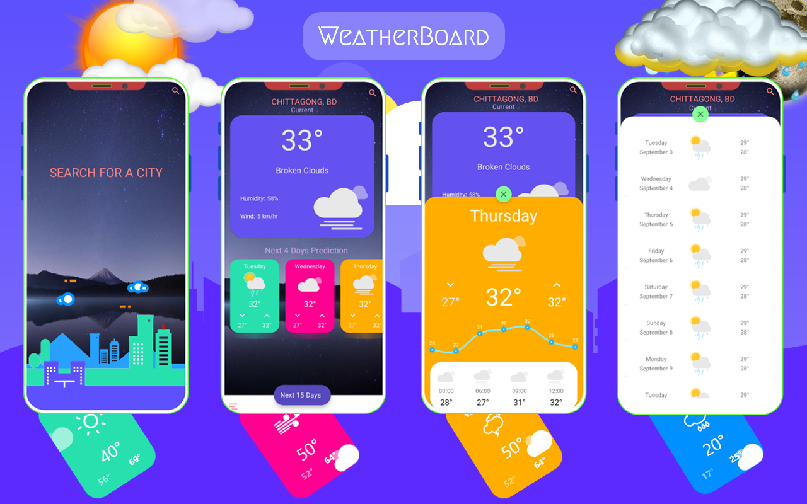
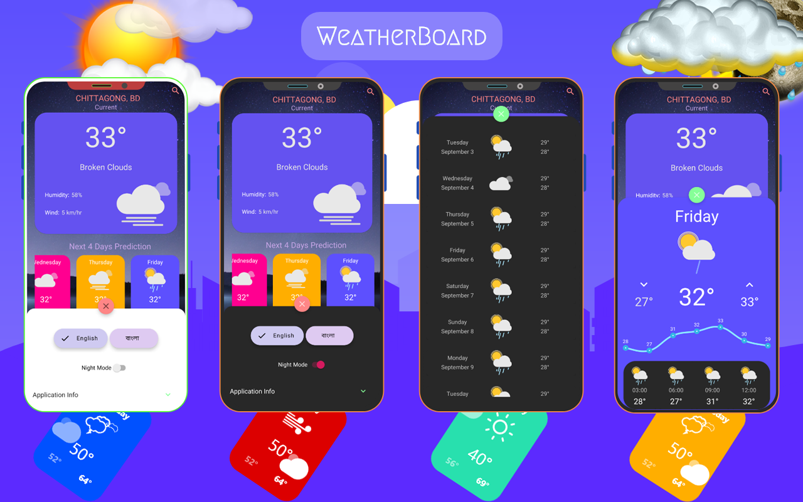
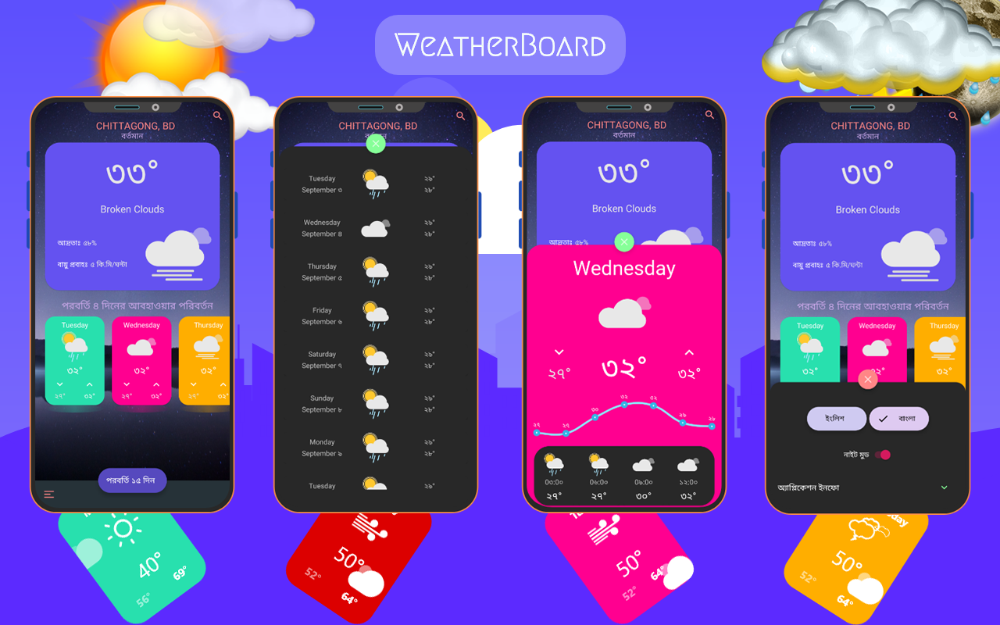
--- **How To Modify** You can Modify the Application for your Project or Personal Use. **Requirements for Personal Use:** - Android Studio. - Adobe XD. - Adobe PhotoShop. - Git. - Python. --- **Steps** ###### For Personal Use: - Clone or Download the repository.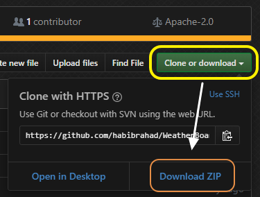
- Extract the downloaded zip in your Desired Directory. - Run Android Studio and Open The Directory as a Project. It will take a while to build The Project via Android Studio. - You can do some exterior changes like below. - To change the Application Name, edit WeatherBoard from `strings.xml` & `strings.xml (bn)`
- To change App Icon, Paste Your `png` in `/res/drawable/mipmap` with the name `ic_launcher.png`
- To change App Background, Paste Your `png` in `res/drawable` with the name `back.png`
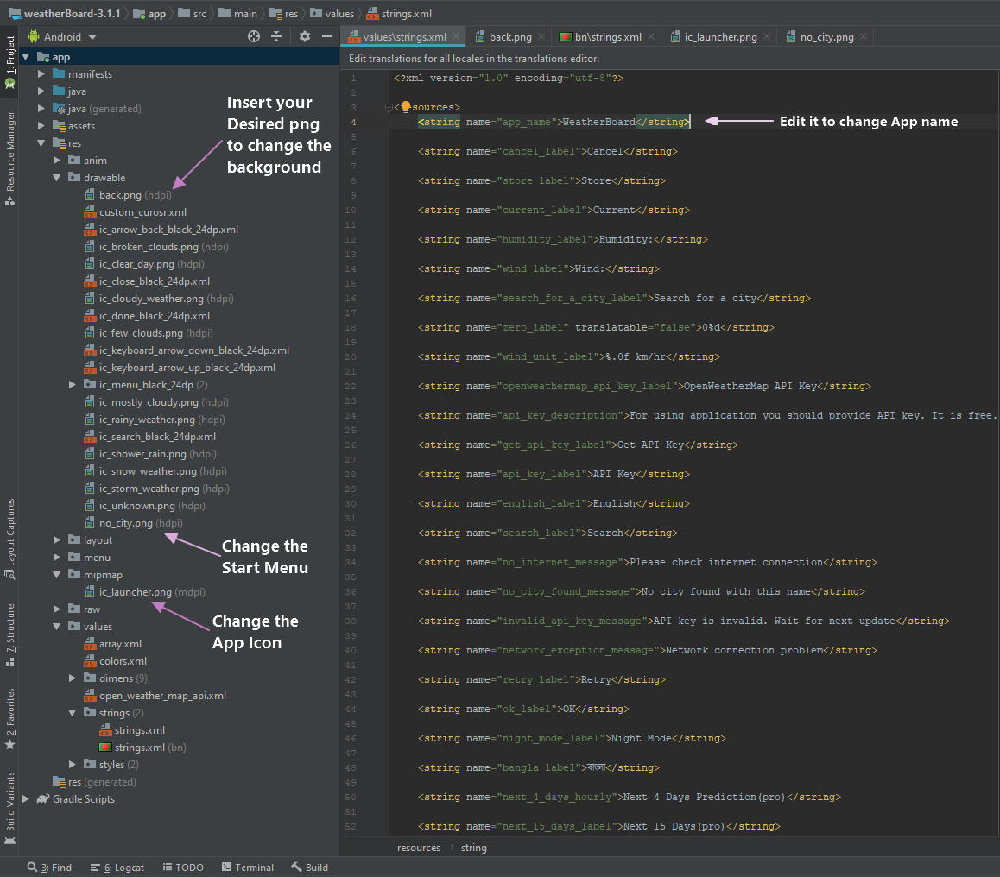
- To change **"Application Info"**, please follow the procedures below to change both `strings.xml` & `strings.xml (bn)` from `res/values/strings/`. - To Application info, edit the attributes of `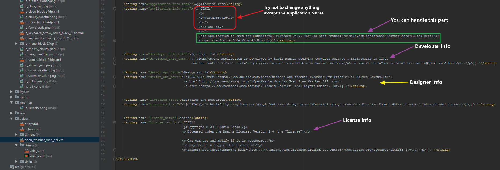
--- ###### For Project: - To Change The Package Name, use `Refactor` to rename it. The procedure are given below.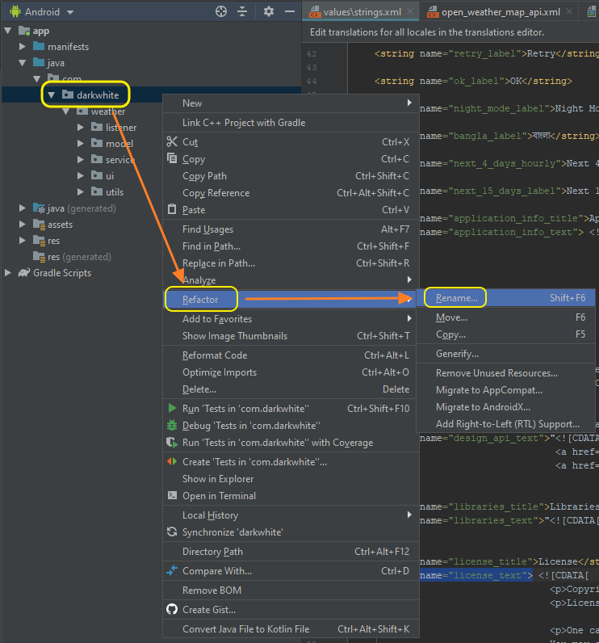
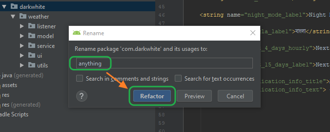
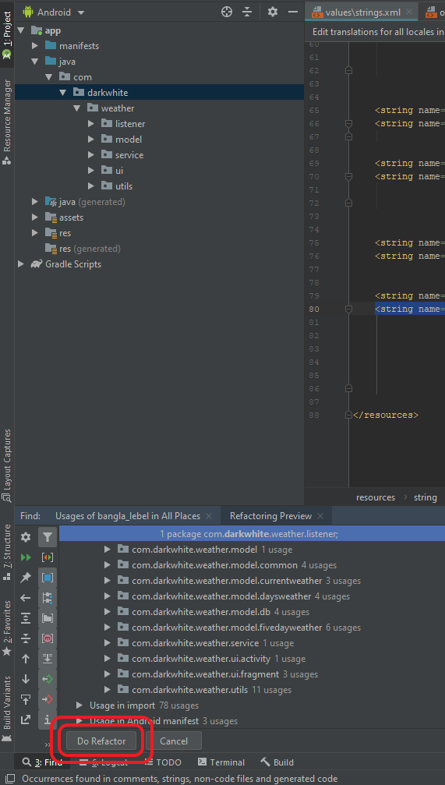
- To change tha exterior follow the steps of **"For Personal Use"** - To change API, edit the attributes of`res/values/open_weather_map_api.xml`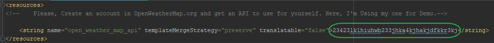
- Also edit `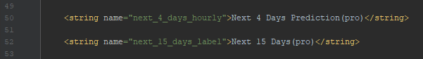
--- **Libraries & Dependencies** - [AndroidX]: Added Recyclerview and Constraint Layout. - [Material Design]: Material CardView, Material Button, Bottom App Bars, Extended Floating Action Button etc. - [FastAdapter]: Fast & easy way to use adapter library. Helps to reduce the boot time of the Application. - [Glide]: Caching library for smooth scrolling. - [Lottie-Android]: For animated Buttons and Icons. - [MaterialSearchView]: Implementing SearchView in the Layout. - [Firebase Core] : Crashlytics (for beta version only) - [ButterKnife]: Bind Android views. --- ## Credit #### This application is Designed from [Weather App Freebie] and concept by Behrouz Khezry. ---- # License Copyright 2019 Habib Rahad Licensed under the Apache License, Version 2.0 (the "License"); you may not use this file except in compliance with the License. You may obtain a copy of the License at http://www.apache.org/licenses/LICENSE-2.0 Unless required by applicable law or agreed to in writing, software distributed under the License is distributed on an "AS IS" BASIS, WITHOUT WARRANTIES OR CONDITIONS OF ANY KIND, either express or implied. See the License for the specific language governing permissions and limitations under the License. [Weather App Freebie]: https://www.uplabs.com/posts/weather-app-freebie [OpenWeatherMap]: https://openweathermap.org/ [AndroidX]: https://developer.android.com/jetpack/androidx/ [Material Design]: https://material.io/develop/android/ [FastAdapter]: https://github.com/mikepenz/FastAdapter [Glide]: https://github.com/bumptech/glide [Lottie-Android]: https://github.com/airbnb/lottie-android [MaterialSearchView]: https://github.com/MiguelCatalan/MaterialSearchView [Firebase Core]: https://firebase.google.com/ [ButterKnife]: https://github.com/JakeWharton/butterknife [Release]: https://github.com/habibrahad/WeatherBoard/releases [Play Store]: https://play.google.com/store/apps/details?id=com.darkwhite.weather